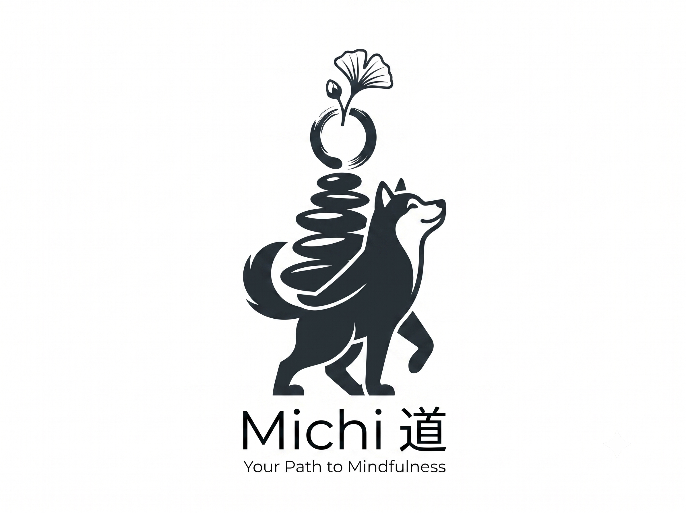

Download APKEach practice is rooted in Japanese philosophy and designed for small, consistent daily action.
Find your reason for being through guided reflections on what you love, what you're good at, what the world needs, and what you can be paid for.
Embrace imperfection with immutable journal entries. Once saved, entries cannot be edited — a reminder to accept things as they are.
Practice breathing and meditation with guided timers. Find power in the space between — the pauses that give life meaning.
Build micro-habits with 1% daily improvements. Track streaks and watch small consistent actions compound into lasting change.
Forest bathing with sensory awareness prompts. Reconnect with nature through mindful observation of sight, sound, smell, touch, and taste.
Endure through 30, 60, or 90-day challenges. Build resilience and mental strength by committing to sustained effort.
Structured self-reflection at day's end. Review what went well, what to improve, and what you learned to grow continuously.
Awareness of impermanence through gratitude journaling. Notice the beauty in fleeting moments and cultivate deep appreciation.
Built for consistency, not intensity.
All data stored locally on your device. No account needed, no internet required.
Your reflections stay on your phone. No tracking, no analytics, no data collection.
Clean, calm interface inspired by Japanese aesthetics. No distractions, just practice.
Track your consistency across all seven practices with visual progress rings.
Start your journey in three simple steps.
Grab the APK from GitHub Releases and install it on your Android device. No account or sign-up required.
Choose from seven Japanese philosophy practices. Start with one that resonates, or try a different one each day.
Commit to small daily actions. Track streaks, reflect on your journey, and watch consistency transform your life.
The path is the path. Start walking.
Download Michi APK